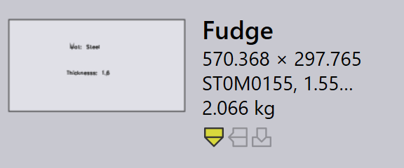

Import

Ajustes de saída
Salvar padrão de planificação - Habilite esta opção para que o flat pattern de uma peça importada seja salvo.
Formato para padrão de planificação - Esta opção é usada para escolher os formatos de arquivo DXF ou GEO.
Destino do padrão de planificação - Este é o local onde o flat pattern será salvo.
Ajustes de importação
Unidades para arquivos DXF - Esta é a unidade de medida com a qual um arquivo DXF será importado; o usuário pode escolher entre mm ou inch.
Teclas de pesquisa de material - Várias entradas de pesquisa podem ser atribuídas usando um separador de vírgula entre elas. Quando uma peça é importada, o TruSmartCAM usa essas chaves para pesquisar valores de material. Os valores pesquisados são então usados para resolver o raw material. Os valores originais são armazenados nas Misc Properties da peça.
Teclas de pesquisa de revisão - Quando uma peça é importada, o valor de revisão do arquivo de peça bruto (o arquivo de peça sendo importado) é comparado ao valor de revisão existente no repositório. A importação é abandonada se a revisão for a mesma. O mapeamento de campo personalizado agora também é suportado para os arquivos DXF. Para os arquivos DXF, os dados do campo personalizado são extraídos da camada de texto do desenho ou de um anexo PPI.
Usar comparação de geometria na mesma revisão CAD - Compara a geometria ao importar uma peça com a mesma revisão CAD e solicita que o usuário substitua ou ignore a importação se forem detectadas diferenças. Consulte Import configuration para mais detalhes.
Teclas de nome de peça - Esta opção funciona de forma semelhante às chaves de material e Teclas de pesquisa de revisão. Defina uma ou mais Teclas de nome de peça para usar o Nome da peça do PPI em vez do nome do arquivo como o nome da peça.
Teclas de pesquisa de espessura - Várias entradas de pesquisa podem ser atribuídas usando um separador de vírgula entre elas. Quando uma peça é importada, o TruSmartCAM usa essas chaves para pesquisar valores de espessura. Os valores pesquisados são então usados para resolver a espessura. Os valores originais são armazenados nas Misc Properties da peça.
Tolerância de comparação da espessura - Isso é usado na pesquisa do raw material quando uma peça é importada. O TruSmartCAM tenta resolver o raw material após o nome do material e a espessura serem analisados. Para mais informações, consulte o tópico Thickness fudge abaixo.
Identificar formas após importar uma planificação - Quando uma peça é importada, as formas internas dentro da peça podem ser reconhecidas e identificadas automaticamente.
Ajuste de tolerância para identificação de formas - O valor do fudge de identificação de forma pode ser definido em:
-
Global level - Este valor é usado como padrão para todas as formas.
-
Individual Shape Level - O valor padrão pode ser substituído definindo o valor do fudge no nível de forma individual. Selecionar a forma no diálogo Shape Library exibe o valor do fudge. Por padrão, isso é definido como 0, e o valor global padrão é usado para essas formas.
Girar plano na horizontal - Geralmente, as mesas das máquinas de corte são retangulares e mais largas. Para melhorar a viabilidade do ferramental, gire a peça ao longo da largura da peça após a peça ser importada.
Limite de rotação da peça - Defina isso como o número mínimo para permitir a rotação. Qualquer peça menor que o valor definido não será girada.
Ajustes div.
Habilitar pré-importação de ferramentas externas - Habilite a opção de importação de ferramentas externas de pré-importação para habilitar o Creo Reader. O TruSmartCAM carrega as instâncias de família pré-extraídas da peça inserida. Observe que a extração de instância é realizada durante o upload da peça (como uma operação de pré-importação), portanto, o software Creo deve estar instalado no computador de onde a peça está sendo carregada.
Ignorar as cores do desenho nas miniaturas de planificação para maior clareza - Habilite esta opção para gerar miniaturas mais nítidas em escala de cinza. As cores das camadas e as entidades de texto são ignoradas para maior clareza da imagem.
Usar apenas um mecanismo para todas as tarefas de importação - Quando habilitado, apenas um núcleo de mecanismo é usado para tarefas importantes.
Thickness fudge
O Tolerância de comparação da espessura escolhe o valor de espessura de chapa mais próximo quando uma espessura de chapa desejada não está disponível no inventário, comparando o valor de espessura das chapas no inventário.
Por exemplo, vamos supor o seguinte:
-
Temos uma peça com espessura de chapa de 1,6 mm e material de aço.

-
O valor de Tolerância de comparação da espessura é 0,1 mm.

-
O inventário tem chapas de aço com espessura de 1,5 mm, 1,55 mm e 1,7 mm.

O TruSmartCAM escolhe uma chapa com o valor de espessura mais próximo após comparar o valor de Tolerância de comparação da espessura (0,1 mm) com o item importado (medindo 1,6 mm). Neste caso, 1,55 mm será a seleção.
